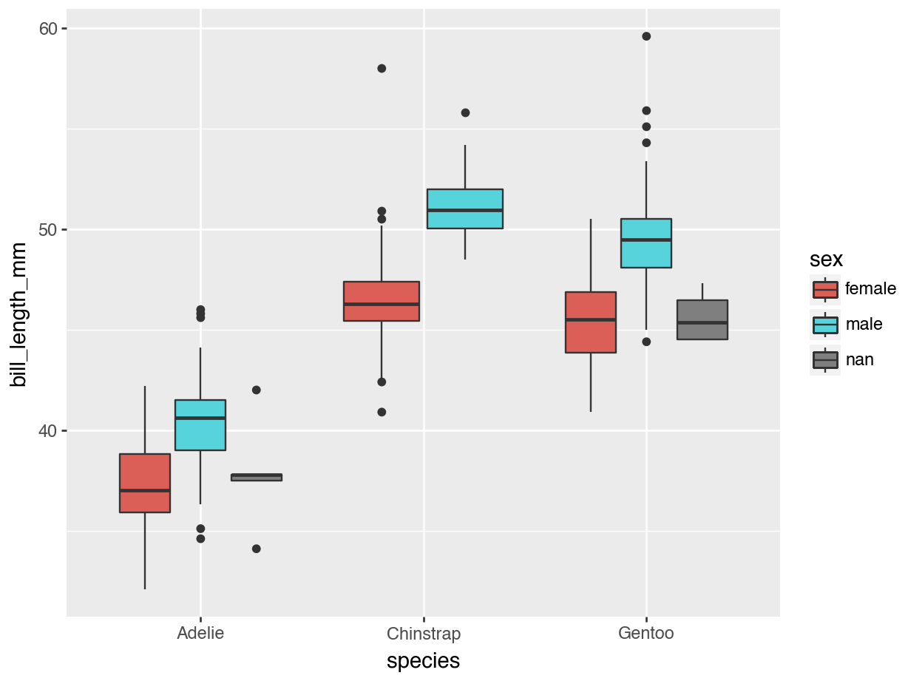
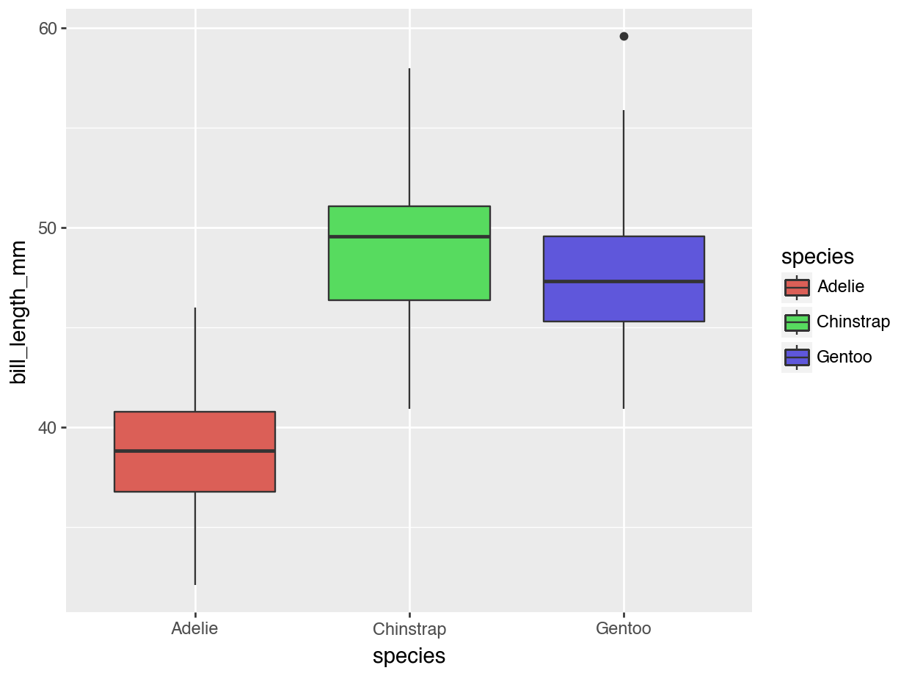
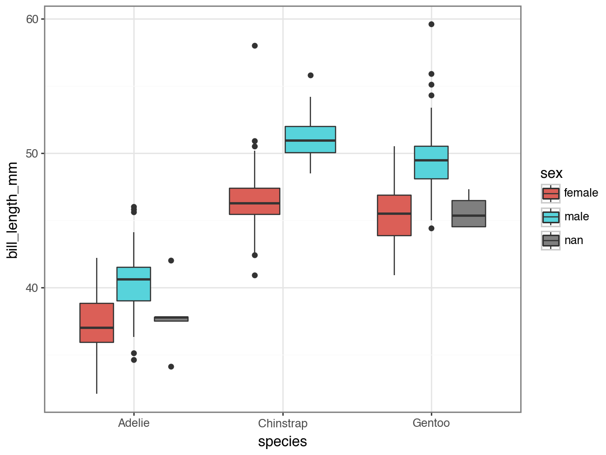
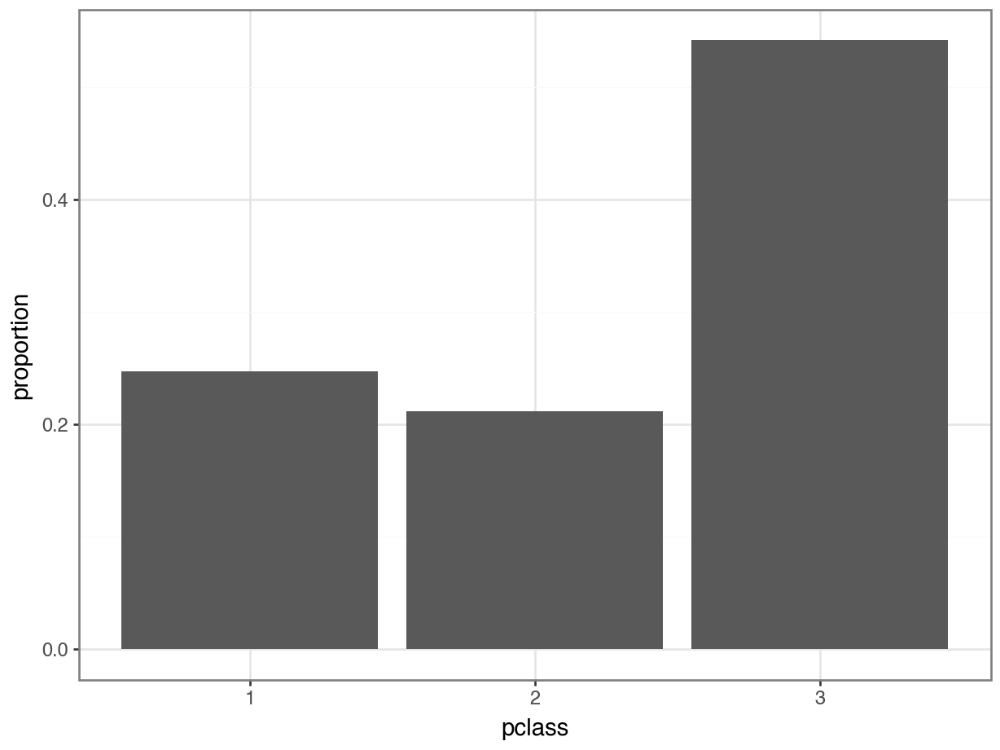
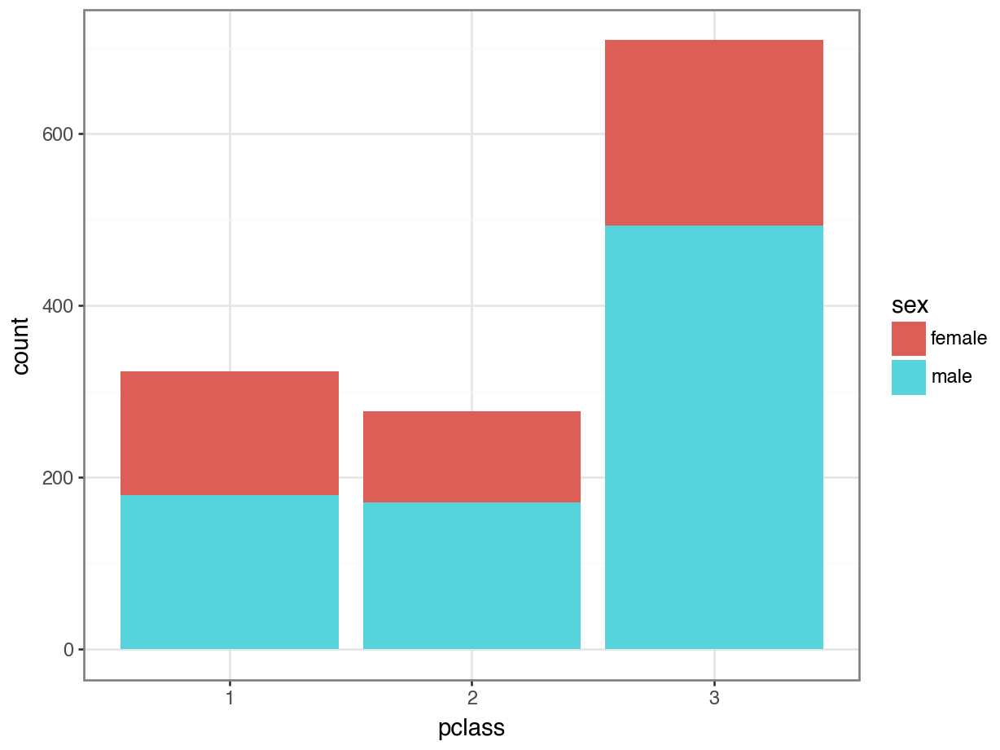
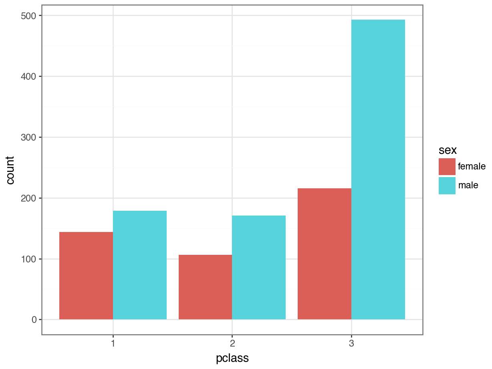
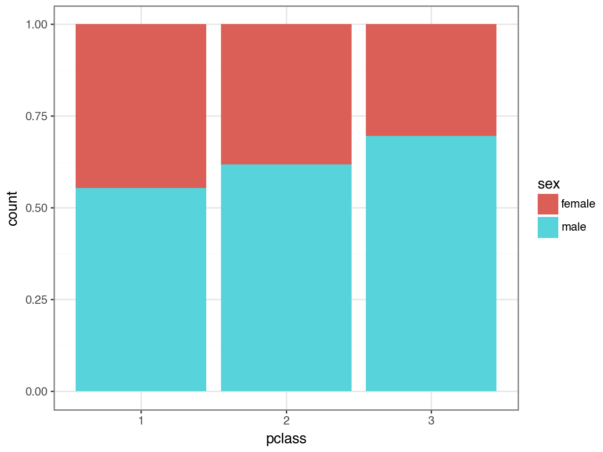
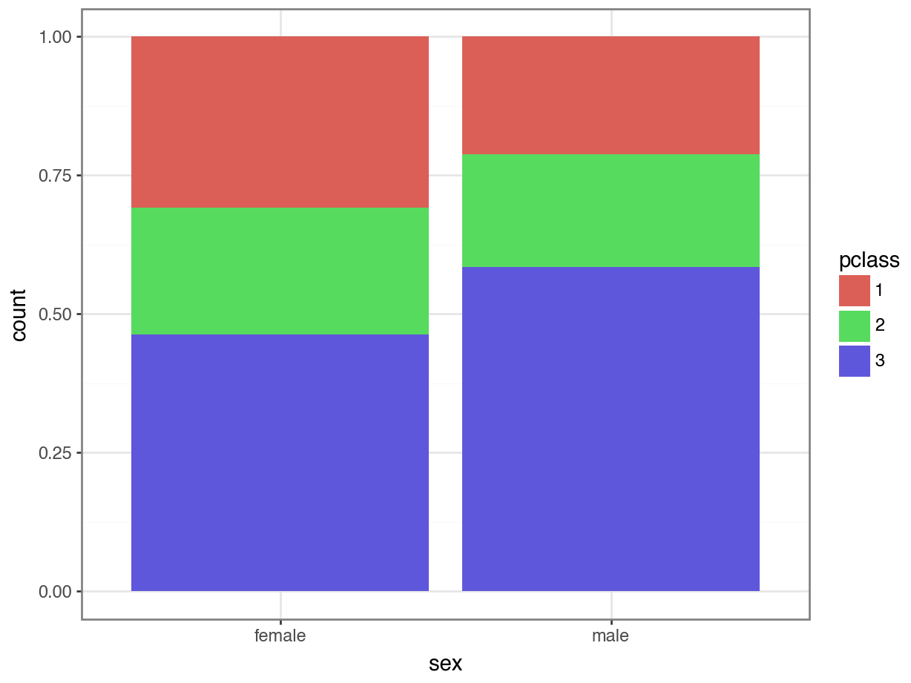

df = pd.read_csv("https://datasci112.stanford.edu/data/titanic.csv")Visualizing and Comparing Categorical Variables
The story so far
Getting and Prepping Data
df["pclass"] = df["pclass"].astype("category")
df["survived"] = df["survived"].astype("category")Thinking About Variable Types
| name | pclass | survived | sex | age | sibsp | parch | ticket | fare | cabin | embarked | boat | body | home.dest |
|---|---|---|---|---|---|---|---|---|---|---|---|---|---|
| Allen, Miss. Elisabeth Walton | 1 | 1 | female | 29.0000 | 0 | 0 | 24160 | 211.3375 | B5 | S | 2 | NaN | St Louis, MO |
| Allison, Master. Hudson Trevor | 1 | 1 | male | 0.9167 | 1 | 2 | 113781 | 151.5500 | C22 C26 | S | 11 | NaN | Montreal, PQ / Chesterville, ON |
| Allison, Miss. Helen Loraine | 1 | 0 | female | 2.0000 | 1 | 2 | 113781 | 151.5500 | C22 C26 | S | NA | NaN | Montreal, PQ / Chesterville, ON |
| Allison, Mr. Hudson Joshua Creighton | 1 | 0 | male | 30.0000 | 1 | 2 | 113781 | 151.5500 | C22 C26 | S | NA | 135 | Montreal, PQ / Chesterville, ON |
| Allison, Mrs. Hudson J C (Bessie Waldo Daniels) | 1 | 0 | female | 25.0000 | 1 | 2 | 113781 | 151.5500 | C22 C26 | S | NA | NaN | Montreal, PQ / Chesterville, ON |
| Anderson, Mr. Harry | 1 | 1 | male | 48.0000 | 0 | 0 | 19952 | 26.5500 | E12 | S | 3 | NaN | New York, NY |
Accessing Rows and Columns
df.iloc[5,]name Anderson, Mr. Harry
pclass 1
survived 1
sex male
age 48.0
sibsp 0
parch 0
ticket 19952
fare 26.55
cabin E12
embarked S
boat 3
body NaN
home.dest New York, NY
Name: 5, dtype: objectdf["name"].head()0 Allen, Miss. Elisabeth Walton
1 Allison, Master. Hudson Trevor
2 Allison, Miss. Helen Loraine
3 Allison, Mr. Hudson Joshua Creighton
4 Allison, Mrs. Hudson J C (Bessie Waldo Daniels)
Name: name, dtype: objectQuick Summary of Quantitative Variables
df.describe() age sibsp parch fare body
count 1046.000000 1309.000000 1309.000000 1308.000000 121.000000
mean 29.881135 0.498854 0.385027 33.295479 160.809917
std 14.413500 1.041658 0.865560 51.758668 97.696922
min 0.166700 0.000000 0.000000 0.000000 1.000000
25% 21.000000 0.000000 0.000000 7.895800 72.000000
50% 28.000000 0.000000 0.000000 14.454200 155.000000
75% 39.000000 1.000000 0.000000 31.275000 256.000000
max 80.000000 8.000000 9.000000 512.329200 328.000000Summarizing Categorical Variables
The list of percents for each category is called the distribution of the variable.
df["pclass"].value_counts()pclass
3 709
1 323
2 277
Name: count, dtype: int64df["pclass"].value_counts(normalize = True)pclass
3 0.541635
1 0.246753
2 0.211612
Name: proportion, dtype: float64Visualizing One Categorical Variable
The Grammar of Graphics
The grammar of graphics is a framework for creating data visualizations.
A visualization consists of:
The aesthetic: Which variables are dictating which plot elements.
The geometry: What shape of plot you are making.
The theme: Other choices about the appearance.
Example
import pandas as pd
from palmerpenguins import load_penguins
from plotnine import ggplot, geom_point, aes, geom_boxplot
penguins = load_penguins()
(
ggplot(data = penguins, mapping = aes(x = "species",
y = "bill_length_mm",
fill = "sex")
) +
geom_boxplot()
)
. . .
Aesthetics
Where are variables mapped to aspects of the plot?
Geometry
What shape(s) are used to represent the data / observations?
plotnine
The plotnine library implements the grammar of graphics in Python.
- The
aes()function is the place to map variables to plot aesthetics.x,y, andfillare three possible aesthetics that can be specified
- A variety of
geom_XXX()functions allow for different plotting shapes (e.g. boxplot, histogram, etc.)- Aesthetics can differ based on the
geomyou choose!
- Aesthetics can differ based on the
Themes
Code
(
ggplot(data = penguins, mapping = aes(x = "species",
y = "bill_length_mm",
fill = "species")
) +
geom_boxplot()
)
Code
from plotnine import theme_bw
(
ggplot(penguins, aes(x = "species",
y = "bill_length_mm",
fill = "sex")
) +
geom_boxplot() +
theme_bw()
)
Check-In
What are the aesthetics and geometry in the cartoon plot below?

Bar Plots
To visualize the distribution of a categorical variable, we should use a bar plot.
Code
from plotnine import *
(
ggplot(data = df, mapping = aes(x = "pclass")) +
geom_bar() +
theme_bw()
)Calculating Percents
pclass_dist = (
df['pclass']
.value_counts(normalize = True)
.to_frame()
.reset_index()
)
pclass_dist pclass proportion
0 3 0.541635
1 1 0.246753
2 2 0.211612Percents on Plots
Code
(
ggplot(data = pclass_dist,
mapping = aes(x = "pclass", y = "proportion")) +
geom_col() + ### notice this change to a column plot!
theme_bw()
)
Tip
Technically, you could still use geom_bar(), but you would need to specify that you didn’t want it to use stat = "count" (the default). You’ve already calculated the proportions, so you would use geom_bar(stat = "identity").
Visualizing Two Categorical Variables
Option 1: Stacked Bar Plot
Code
(
ggplot(data = df, mapping = aes(x = "pclass", fill = "sex")) +
geom_bar(position = "stack") +
theme_bw()
)
Option 1: Stacked Bar Plot
What are some pros and cons of the stacked bar plot?
Pros
- We can still see the total counts in each class
- We can easily compare the
malecounts in each class, since those bars are on the bottom.
Cons
- It is hard to compare the
femalecounts, since those bars are stacked on top. - It is hard to estimate the distributions.
Option 2: Side-by-Side Bar Plot
Code
(
ggplot(data = df, mapping = aes(x = "pclass", fill = "sex")) +
geom_bar(position = "dodge") +
theme_bw()
)
Option 2: Side-by-side Bar Plot
What are some pros and cons of the side-by-side bar plot?
Pros
We can easily compare the
femalecounts in each class.We can easily compare the
malecounts in each class.We can easily see counts of each within each class.
Cons
It is hard to see total counts in each class.
It is hard to estimate the distributions.
Option 3: Stacked Percentage Bar Plot
Code
(
ggplot(data = df, mapping = aes(x = "pclass", fill = "sex")) +
geom_bar(position = "fill") +
theme_bw()
)
Option 3: Stacked Percentage Bar Plot
What are some pros and cons of the stacked percentage bar plot?
Pros
This is the best way to compare sex balance across classes!
This is the option I use the most, because it can answer “Are you more likely to find ______ in ______ ?” type questions.
Cons
- We can no longer see any counts!
Activity 1.2
Choose one of the plots from lecture so far and “upgrade” it.
You can do this by:
Finding and using a different
themeUsing
labs()to change the axis labelsTrying different variables
Trying a different geometries
Using
+ scale_fill_manual()to change the colors being used
Tip
You will need to use documentation of
plotnineand online resources!Check out https://www.data-to-viz.com/ for ideas and example code.
Ask GenAI questions like, “What do I add to a plotnine bar plot to change the colors?” (But of course, make sure you understand the code you use!)
Joint distributions
Two Categorical Variables
df[["pclass", "sex"]].value_counts()pclass sex
3 male 493
female 216
1 male 179
2 male 171
1 female 144
2 female 106
Name: count, dtype: int64Two-way Table
(
df[["pclass", "sex"]]
.value_counts()
.unstack()
)sex female male
pclass
1 144 179
2 106 171
3 216 493- This is sometimes called a cross-tab or cross-tabulation.
Pivot Table
Essentially unstack() has pivoted the sex column from long format (where the values are included in one column) to wide format where each value has its own column.
Two-way Table - Percents
(
df[["pclass", "sex"]]
.value_counts(normalize = True)
.unstack()
)sex female male
pclass
1 0.110008 0.136746
2 0.080978 0.130634
3 0.165011 0.376623- All of these values should sum to 1, aka, 100%!
Switching Variable Order
What cross-tabulation would you expect if we changed the order of the variables? In other words, what would happen if "sex" came first and "pclass" came second?
. . .
(
df[["sex", "pclass"]]
.value_counts(normalize = True)
.unstack()
)pclass 1 2 3
sex
female 0.110008 0.080978 0.165011
male 0.136746 0.130634 0.376623Interpretation
We call this the joint distribution of the two variables.
sex female male
pclass
1 0.110008 0.136746
2 0.080978 0.130634
3 0.165011 0.376623Of all the passengers on the Titanic, 11% were female passengers riding in first class.
. . .
- NOT “11% of all females on Titanic…”
- NOT “11% of all first class passengers…”
Conditional Distribution from Counts
We know that:
466 passengers identified as female
Of those 466 passengers, 144 rode in first class
. . .
So:
- 144 / 466 = 31% of female identifying passengers rode in first class
Here we conditioned on the passenger being female, and then looked at the conditional distribution of pclass.
Conditional Distribution from Percentages
We know that:
35.5% of all passengers identified as female
Of those 35.5% of passengers, 11% rode in first class
So:
- 0.11 / 0.355 = 31% of female identifying passengers rode in first class
Here we conditioned on the passenger being female, and then looked at the conditional distribution of pclass.
Swapping Variables
We know that:
323 passengers rode in first class
Of those 323 passengers, 144 identified as female
So:
- 144 / 323 = 44.6% of first class passengers identified as female
Here we conditioned on the passenger being in first class, and then looked at the conditional distribution of sex.
Which one to condition on?
This depends on the research question you are trying to answer.
. . .
“What class did most female identifying passengers ride in?”
-> Of all female passengers, what is the conditional distribution of class?
. . .
“What was the gender breakdown of first class?”
-> Of all first class passengers, what is the conditional distribution of sex?
Calculating in Python
When we study two variables, we call the individual one-variable distributions the marginal distribution of that variable.
marginal_class = (
df['pclass']
.value_counts(normalize = True)
)marginal_classpclass
3 0.541635
1 0.246753
2 0.211612
Name: proportion, dtype: float64marginal_sex = (
df['sex']
.value_counts(normalize = True)
)marginal_sexsex
male 0.644003
female 0.355997
Name: proportion, dtype: float64Calculating in Python
We need to divide the joint distribution (e.g. “11% of passengers were first class female”) by the marginal distribution of the variable we want to condition on (e.g. 35.5% of passengers were female).
joint_class_sex = (
df[["pclass", "sex"]]
.value_counts(normalize = True)
.unstack()
)
joint_class_sex.divide(marginal_sex)sex female male
pclass
1 0.309013 0.212337
2 0.227468 0.202847
3 0.463519 0.584816Check-In
marginal_sexsex
male 0.644003
female 0.355997
Name: proportion, dtype: float64joint_class_sexsex female male
pclass
1 0.110008 0.136746
2 0.080978 0.130634
3 0.165011 0.376623joint_class_sex.divide(marginal_sex)sex female male
pclass
1 0.309013 0.212337
2 0.227468 0.202847
3 0.463519 0.584816How do you think divide() works?
Check-In
Should the rows or columns add up to 100%? Why?
sex female male
pclass
1 0.309013 0.212337
2 0.227468 0.202847
3 0.463519 0.584816Conditional on Class
joint_class_sex = (
df[["sex", "pclass"]]
.value_counts(normalize = True)
.unstack()
)
joint_class_sex.divide(marginal_class)pclass 1 2 3
sex
female 0.44582 0.382671 0.304654
male 0.55418 0.617329 0.695346What if you get it backwards?
joint_class_sex = (
df[["pclass", "sex"]]
.value_counts(normalize = True)
.unstack()
)
joint_class_sex.divide(marginal_class) 1 2 3 female male
pclass
1 NaN NaN NaN NaN NaN
2 NaN NaN NaN NaN NaN
3 NaN NaN NaN NaN NaNWhich plot better answers the question:
“Did women tend to ride in first class more than men?”
Code
(
ggplot(df, aes(x = "pclass", fill = "sex")) +
geom_bar(position = "fill") +
theme_bw()
)
Code
(
ggplot(df, aes(x = "sex", fill = "pclass)) +
geom_bar(position = "fill") +
theme_bw()
)
Takeaways
Takeaways
We use
plotnineand the grammar of graphics to make visuals.For two categorical variables, we might use a stacked bar plot, a side-by-side bar plot, or a stacked percentage bar plot - depending on what we are trying to show.
The joint distribution of two variables gives the percents in each subcategory.
The marginal distribution of a variable is its individual distribution.
The conditional distribution of a variable is its distribution among only one category of a different variable.
We calculate the conditional distribution by dividing the joint by the marginal.